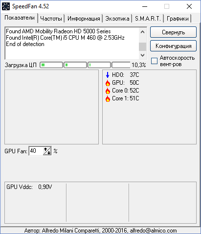

SpeedFan 4.52
SpeedFan – бесплатная утилита, которая позволяет контролировать температуру и скорости вращения вентиляторов в системе. Программа работает практически со всем чипами мониторинга, а также позволяет динамически изменять скорости вращения вентиляторов в зависимости от температуры внутри корпуса компьютера.
Присутствует возможность изменения частот системной шины на некоторых материнских платах оснащенных поддерживаемыми программой генераторами частот. Ведет статистику снимаемых параметров и записывает их в log файл, так же может отображать графики изменения температур, напряжений и скоростей вентиляторов.
После установки и запуска приложения, открывается главное окно на Английском языке, но т.к. программа поддерживает руский язык, установим его. Для этого необходимо нажать на кнопку «Configure» и в появившемся окне следует выбрать вкладку «Option» и из выпадающего спика, раздела «Language», выбрать необходимый язык, в данном случае русский.

На главном окне в разделе «Показатели» отображены видеокарта и установленный центральный процессор на материнской плате, количество ядер(потоков) и их загруженность. С левой стороны датчики оборотов (в моем случае они отсутствуют).
С правой стороны датчики температуры и в нижней части регулировка оборотов вентиляторов. Можно заметить и пункт «Автоскорость вентиляторов», подразумевающий автоматическую настройку скорости вентиляторов программой в зависимости от заданных параметров. Кнопка «Конфигурации» открывает соответственно конфигурации программы. Кнопка «Свернуть» выполняет туже функцию, что и кнопка в верхнем правом углу окна программы.
В разделе «Частоты» так же на главном окне программы находятся элементы выбора Системной платы и Установки автоизменения частоты при указанных параметрах загрузки.
В разделе «Информация, этого же окна находится общая информация о программе. А также форма отправления отчетов для отладки разработчику.

В Разделе «Экзотика» представлены датчики по всем компонентам персонального компьютера
Данный раздел сейчас находится на стадии Beta. Для отображения датчиков необходимо нажать кнопку "Показать магию".
Раздел «S.M.A.R.T» позволяет посмотреть состояние жестких дисков
S.M.A.R.T. (от англ. self-monitoring, analysis and reporting technology — технология самоконтроля, анализа и отчётности) — технология оценки состояния жёсткого диска встроенной аппаратурой самодиагностики, а также механизм предсказания времени выхода его из строя.
Технология S.M.A.R.T. является частью протокола ATA (ныне более известного как SATA). И хотя значительная часть функционала ещё не попала в рабочую спецификацию стандарта ATA, многие SATA диски её поддерживают. Однако широко распространённые ныне USB флешки далеко не всегда поддерживают S.M.A.R.T. поскольку USB Mass Storage основан на другом протоколе SCSI, который не содержит аналогичного функционала. Существуют переходники SATA-USB, работающие на основе спецификации SAT (SCSI-ATA Translation). Некоторые из таких переходников поддерживают трансляцию S.M.A.R.T. данных.
И наконец в разделе «Графики» можно увидеть в графическом представлении изменение температуры, скорости, а также напряжение по каждому компоненту.
Разберем окно «Конфигурации»
В разделе температуры можно выбрать, какие показатели следует отображать на главном окне в разделе «Показатели».
В разделе «Вентиляторы», «Напряжения» и «Скорости» аналогично осуществляется выбор параметров для отображения на главном окне.
Данная программа является отличным помощником в охлаждении компьютера. С помощью нее можно настроить автоматическое управление скоростью вращения вентиляторов, что естественно и влияет на температуру компонентов персонального компьютера.
Возможности программы:
- Функция динамического регулирования скорости вентиляторов на ноутбуке или ПК;
- Контроль температуры процессора в режиме реального времени;
- Взаимодействие со всеми доступными чипами для мониторинга системы;
- Функция, которая позволяет изменить частоты системной шины (работает только с несколькими видами материнских плат);
- Полное отображение статистики работы аппаратных устройств и диаграммы их влияния на общую производительность системы; Идентификация температуры жесткого диска устройства.
Данная программа распространяется бесплатно и ее можно скачать на сайте разработчика http://www.almico.com/sfdownload.php
НИУ МГСУ, 2018 Мещеряков Александр Геннадьевич ИЭУИС 4-1